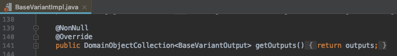
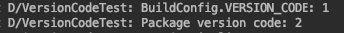

Android Version Code Tricks
Introduction⌗
Version code is a special integer value which works as an internal version number. It is not visible to end users. Android system uses this number to protect against application downgrades — it is not possible to install new application with version code lower than in currently installed application. Developers can use version code for example for doing specific tasks on updating to specific version.
Version code is placed inside AndroidManifest, but usually it is inside *defaultConfig *in build.gradle (from where it is populated to *AndroidManifest *during assemble). Also it is possible to access version code from generated BuildConfig.VERSION_CODE.
When using CI it is also common that version code is provided from outside via gradle parameter:
./gradlew assembleRelease -PversionCode=12
Though it might happen that one would like to add some custom version code logic inside build.gradle. The naive way is to do something like:
defaultConfig {
...
versionCode calculateVersionCode()
...
}
But this version has limitation that this config is default and we don’t have any information on what was the actual assemble variant (i.e. we can’t say that for debug build we want to have one value and for release — another one, as variants are not yet available there).
Variant-specific Version code⌗
Inside android section we have access to application variants:
android.applicationVariants
If we look inside Variant implementation we’ll see that in variant’s output there is method called setVersionCodeOverride:


Let’s try this option. First we’ll setup app and provide 1 as default versionCode and will override it to 2 for all variant outputs:

But then if we look inside BuildConfig file we’ll see that version code is still set to 1. Though if we look into resulting *AndroidManifest *we’ll see version code correctly set to 2. Bug or feature? Let’s find out what is happening.
Inside the code we can access version code from BuildConfig.VERSION_CODE or from PackageManager.packageInfo.versionCode:

After we run code in Logcat we’ll see exactly what we’ve observed above:

The reason why this is happening is that in android gradle build tools there are two separate tasks for generating *BuildConfig *file and for processing AndroidManifest.
If we look inside *GenerateBuildConfig *we’ll see that VERSION_CODE property is generated from getVersionCode() method:

And that getVersionCode refers to value stored in variantConfiguration:

Unlike generating *BuildConfig *in *ProcessApplicationManifest *we see that version code is retrieved from apkData.

If we check variantConfiguration and apkData before and after we set version code override:

We’ll see that value inside output apkData was changed though original value in variantConfiguration remains the same (as expected):

As stated in this issue it is done intentionally for performance reasons.
Conclusion⌗
Be careful if you use setVersionCodeOverride as you might have different version codes in *BuildConfig *and AndroidManifest.
Also according to documentation the recommended way to check version code is to access it via PackageManager, not via BuildConfig: Version your app | Android Developers *The Android system uses your app’s version information to protect against downgrades.The system does not use app…*developer.android.com
Even better is to have versioning logic outside of build.gradle and provide it via gradle parameter by your CI.
Also it is wise choice to not rely much in your codebase on BuildConfig.VERSION_CODE. For migration cases you’d better to introduce your own local versioning (as it is done with SQL databases).
Happy coding!